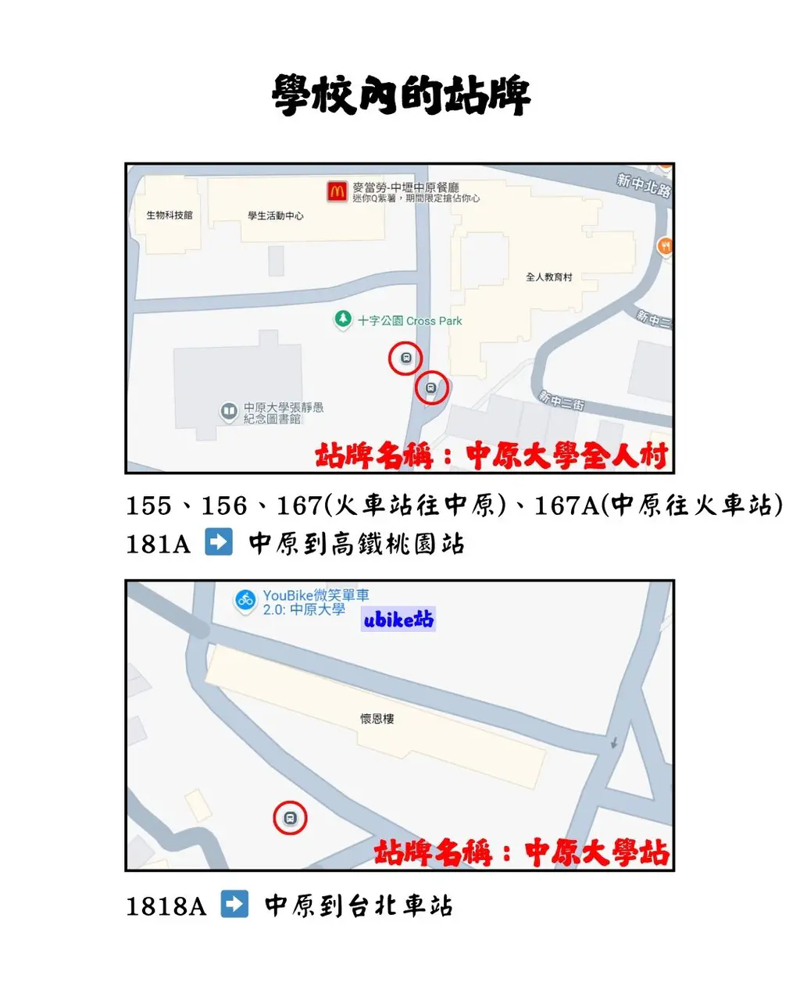
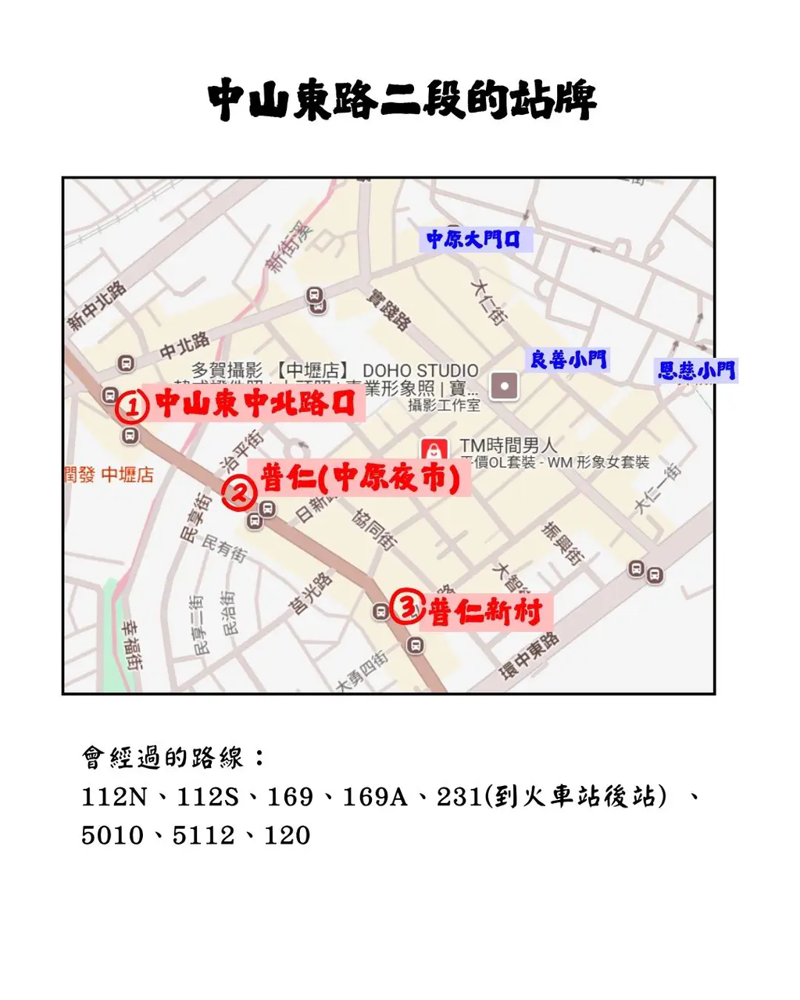
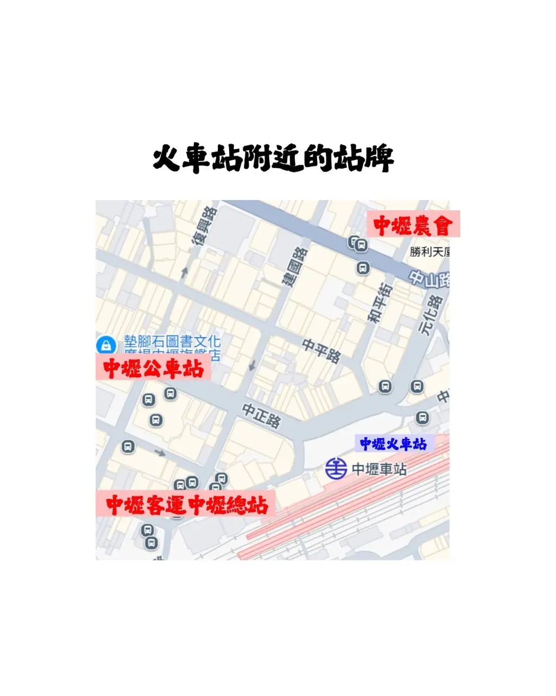

📌 公車攻略：由近到遠

🚍 會開進學校內的路線
- 常用路線：155、156、167(往中原)、167A(往車站)
- 長途直達：1818A (台北車站)、181A (高鐵站)
- 校內站牌：全人村、中原大學站、信實宿舍站。

🚍 中山東路二段 (公車選擇多)
距離校門步行時間參考：
- 中山東中北路口：從 校大門 步行約 10 分鐘。
- 普仁站 (夜市口)：從 良善小門 步行約 10 分鐘。
- 普仁新村站：從 恩慈小門 步行約 10 分鐘。
- 經過路線：112N/S、169(A)、231、5010、5112、120。
⚠️ 112N/S 搭乘方向提醒：
從車站回中原 ➡️ 搭 112N
從中原去車站 ➡️ 搭 112S
從車站回中原 ➡️ 搭 112N
從中原去車站 ➡️ 搭 112S

🚍 火車站附近搭乘點
- 中壢公車站：155、156、5010 首站。
- 中壢客運總站：112N、167 首站。
- 中壢農會：往學校路線幾乎都會經過。